Najważniejsze w pół minuty
- Zaloguj się kodem z kartki od supervisora.
- Wybierz zawodnika z listy po lewej i wpisuj punkty.
- Zapis jest automatyczny — nie ma przycisku „Zapisz”.
- Liczby z dokładnością do 0,1 — przecinek albo kropka; ,8 to 0,8. Zamiast wpisywać, możesz przesunąć suwak pod pozycją.
- Przycisk obok pola pokazuje Twoje oceny tej pozycji u zawodników ocenionych wcześniej.
- Punkty karne wpisuj bez minusa — system sam je odejmie.
- Enter przenosi do następnego pola, Esc cofa zmianę.
- Znacznik Zapisano u góry = wszystko jest w bazie.
- Po seansie możesz pobrać swoją kartę PDF do podpisu.
- Feedback dla zawodnika: przygotuj szkic, popraw i zatwierdź — plik PDF dla zawodnika robi supervisor.
1Zanim zaczniesz
- Laptop z przeglądarką — Chrome, Edge, Firefox albo Safari w aktualnej wersji. System działa też na tablecie, ale najwygodniej ocenia się na laptopie z klawiaturą.
- Internet — hotelowe Wi-Fi wystarczy. Gdy na chwilę zniknie, nic nie przepada (rozdział 12).
- Kod logowania — 6 znaków (litery i cyfry), dostajesz go na kartce od supervisora. W kodach nie ma liter O ani I ani cyfr 0 ani 1, więc nie da się ich pomylić.
- Adres systemu: aufgussworld.github.io/aufguss-world/turniej-trzech-saun
Chcesz poćwiczyć przed turniejem? Otwórz wersję demonstracyjną — ma przykładowych zawodników i przyciski szybkiego logowania. Nic, co tam zrobisz, nie wpływa na prawdziwy turniej.
2Logowanie
- Otwórz adres systemu. Po lewej zobaczysz grafikę turnieju, po prawej ramkę „Sędzia”.
- Wpisz swój kod w polu „Kod logowania”. Wielkość liter i spacje nie mają znaczenia — k7m4qx działa tak samo jak K7M 4QX.
- Kliknij „Zaloguj się”. System otworzy kartę pierwszego zawodnika, którego jeszcze nie oceniłeś do końca.
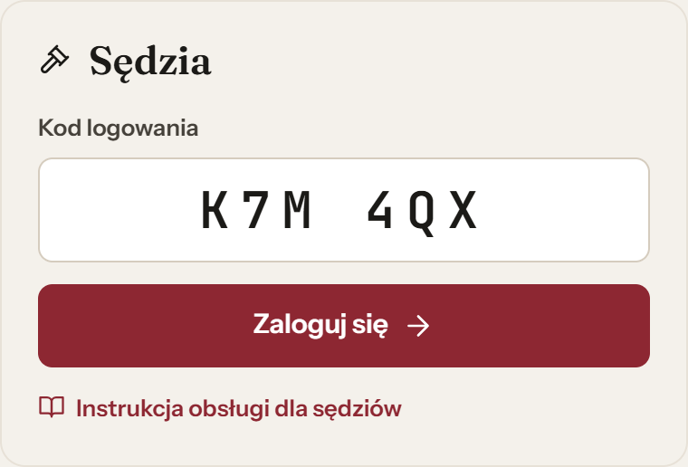
| Komunikat | Co zrobić |
|---|---|
| „Nie znaleziono sędziego z takim kodem…” | Sprawdź kod na kartce i wpisz go jeszcze raz. Jeśli dalej nie działa — poproś supervisora o sprawdzenie kodu. |
| „Kod ma 6 znaków, np. K7M 4QX.” | Kod jest za krótki — sprawdź, czy wpisałeś wszystkie znaki. |
| „Ten turniej nie został jeszcze otwarty przez supervisora.” | Supervisor musi otworzyć turniej. Poczekaj chwilę i zaloguj się ponownie. |
| „Brak połączenia z bazą danych…” | Sprawdź, czy laptop jest połączony z Wi-Fi. |
Logowanie dotyczy jednej karty przeglądarki. Odświeżenie strony (F5) Cię nie wyloguje, ale w nowej karcie lub nowym oknie trzeba zalogować się ponownie.
3Ekran oceniania
Po lewej masz listę zawodników, po prawej kartę oceny wybranego zawodnika.
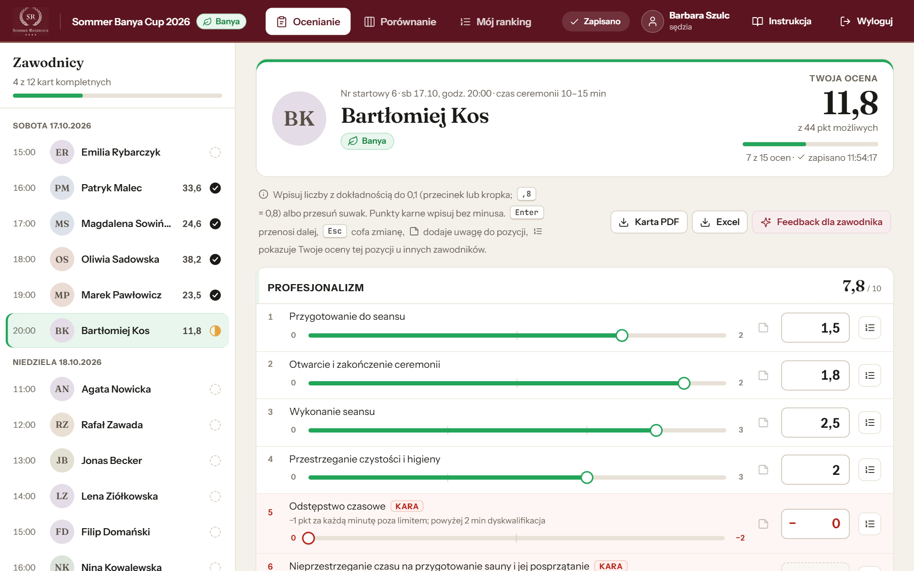
1 2 3 4 5 6 7 8 9- 1Lista zawodników w kolejności startu, pogrupowana według dni, z paskiem postępu: ile Twoich kart jest kompletnych.
- 2Stan karty i Twoja suma punktów. Kliknij zawodnika, aby otworzyć jego kartę.
- 3Zawodnik: numer startowy, dzień i godzina startu, czas ceremonii.
- 4Twoja ocena: suma na bieżąco, postęp wypełniania i godzina ostatniego zapisu.
- 5Karta PDF, Excel i Feedback dla zawodnika — szkic, zatwierdzenie (rozdziały 7 i 8).
- 6Uwaga do pozycji — ikona notatnika (rozdział 5).
- 7Pole oceny — wpisz liczbę, np. 1,5 albo ,8.
- 8Suwak — przeciągnij myszą albo palcem (co 0,1 pkt); na jego końcach widać dozwolony zakres, np. 0 i 2.
- 9Twoje oceny tej pozycji u innych zawodników (rozdział 4).
Stan karty na liście zawodników
nieoceniona · w trakcie · kompletna
Górny pasek
4Wpisywanie ocen
- Kliknij w pole oceny i wpisz liczbę (np. 1,5; zamiast 0,8 wystarczy ,8) — albo przesuń suwak pod nazwą pozycji. Dozwolony zakres widać na końcach suwaka (np. 0 i 2).
- Naciśnij Enter (albo strzałkę w dół) — przejdziesz do następnej pozycji. Shift + Enter lub strzałka w górę wraca do poprzedniej.
- Ocena zapisuje się sama przy każdej zmianie. Suma kategorii i całej karty liczy się na bieżąco.
- Na dole karty przyciskiem „Następny zawodnik” przejdziesz dalej (albo wybierz zawodnika z listy).
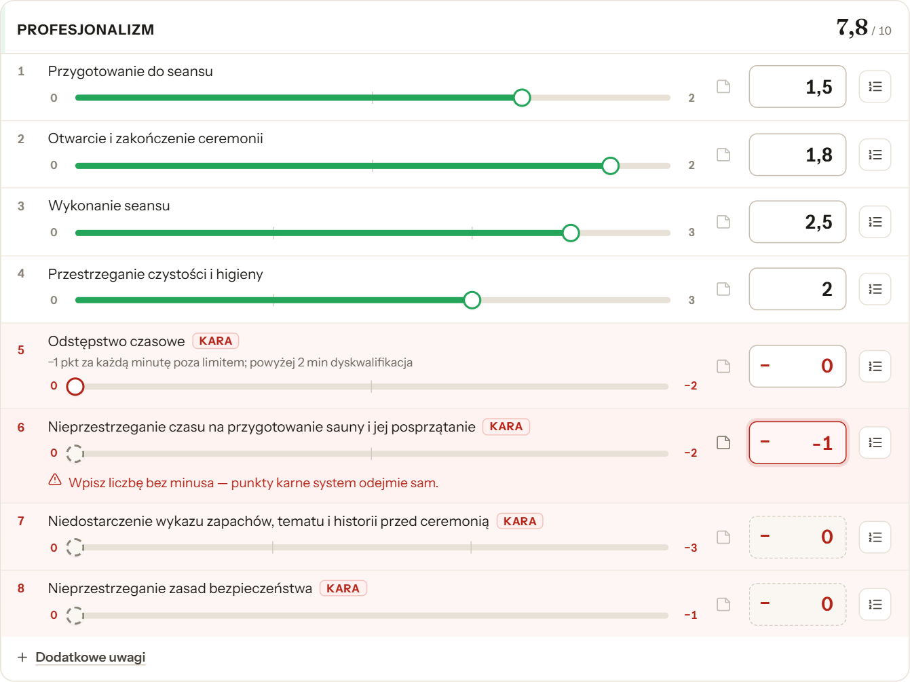
Suwak
- Kliknij albo stuknij w wybrane miejsce suwaka — ocena ustawi się od razu. Przeciągnij w bok, żeby ją dopasować co 0,1 pkt. Pole obok i suma kategorii zmieniają się razem z suwakiem.
- Na telefonie i tablecie przewijanie strony palcem w górę i w dół nie zmienia ocen, nawet gdy zaczniesz na suwaku — ocena zmienia się dopiero przy ruchu w bok albo po stuknięciu.
- Z klawiatury (po kliknięciu suwaka): strzałki ±0,1, PageUp / PageDown ±1 pkt.
- Dokładną wartość zawsze możesz też wpisać w pole — oba sposoby zapisują to samo.
Twoje oceny tej pozycji u innych zawodników
Przycisk po prawej stronie pola otwiera okienko z ocenami, które w tej samej pozycji dałeś zawodnikom ocenionym wcześniej — żeby łatwiej trzymać jedną miarę. Widzisz tylko własne oceny.
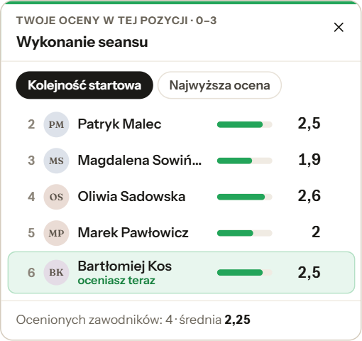
- Przełącznik „Kolejność startowa” / „Najwyższa ocena” zmienia kolejność listy. Na dole — liczba ocenionych i średnia.
- Zawodnik, którego oceniasz teraz, jest wyróżniony. Gdy przy otwartym okienku przesuniesz suwak albo wpiszesz liczbę, jego ocena na liście zmienia się od razu.
- Ikona notatnika na liście pokazuje Twoją uwagę do tej pozycji (najedź kursorem).
- Zamykasz okienko krzyżykiem, klawiszem Esc albo klikając w inne miejsce karty. Dopóki nie ocenisz w tej pozycji żadnego innego zawodnika, przycisk jest nieaktywny.
Zasady wpisywania
- Dokładność 0,1 pkt — np. 1,5 albo 1.5. Zero przed przecinkiem można pominąć: ,8 = 0,8 (po wyjściu z pola zobaczysz „0,8”). Wpis 1,35 zostanie odrzucony. (Jeśli supervisor włączy tryb „tylko przecinek”, kropka będzie błędem.)
- Punkty karne — wiersze z czerwoną etykietą KARA. Wpisz samą liczbę, np. 1 za minutę przekroczenia czasu — minus system doda sam. Pustą karę traktuje jak zero.
- Punkty karne mają suwak od 0 do wartości ujemnej (np. 0 do −1) — przesuwasz go tak samo jak przy zwykłej pozycji.
- Pozycje Tak / Nie (jeśli supervisor ustawi taką na karcie) — kliknij „Nie · 0” albo „Tak · …”. Ponowne kliknięcie zaznaczonej odpowiedzi czyści pole. Z klawiatury: 0, 1 lub spacja.
- Puste pole to brak oceny, a nie zero. Karta jest kompletna, gdy wypełnisz wszystkie pozycje punktowe i Tak / Nie (kary mogą zostać puste).
- Esc cofa zmianę w polu, w którym właśnie jesteś.
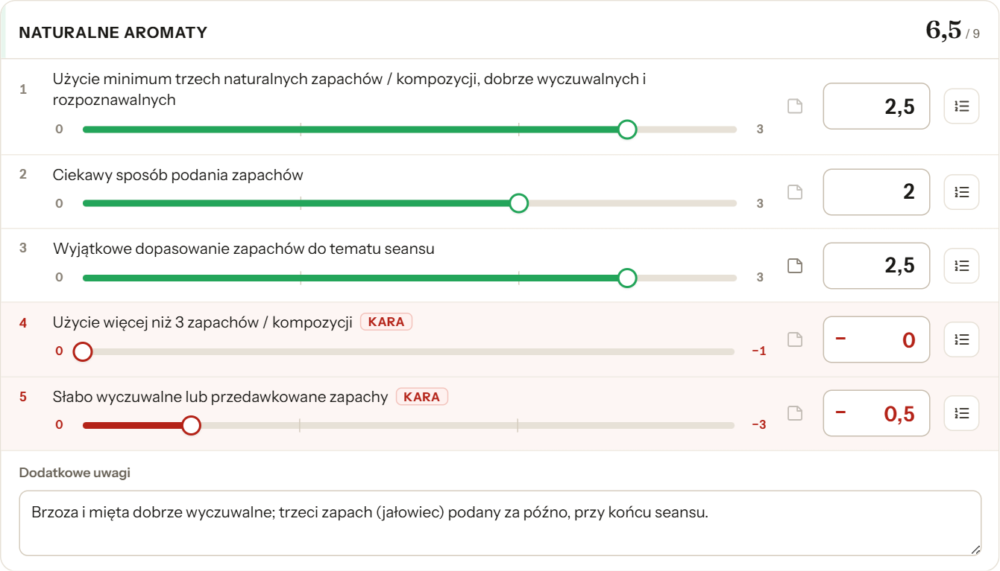
Błędny wpis nie jest zapisywany. Pod polem pojawia się czerwony komunikat, a w karcie zostaje poprzednia ocena. Popraw liczbę i przejdź dalej. Najczęstsze komunikaty:
- „Wpisz liczbę bez minusa — punkty karne system odejmie sam.”
- „Maksymalnie 2 pkt w tej pozycji.” — liczba większa niż zakres.
- „Dokładność oceny to 0,1 pkt — np. 1,3 zamiast 1,35.”
- „To nie jest liczba. Wpisz np. 2 albo 1,5.”
5Uwagi do ocen
Uwagi pomagają później porównać zawodników i napisać feedback. Widzisz je Ty i supervisor — inni sędziowie ich nie widzą.
Uwaga do jednej pozycji
- Kliknij ikonę notatnika w wierszu pozycji.
- Wpisz uwagę i kliknij „Zapisz uwagę” (albo Ctrl + Enter).
- Ikona zmieni się na wypełnioną . Najedź na nią kursorem, aby zobaczyć treść; kliknij, aby poprawić lub usunąć uwagę.
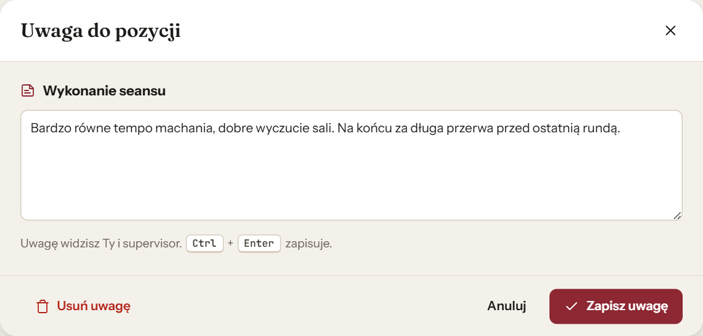
Dodatkowe uwagi do kategorii
Pod każdą kategorią jest odnośnik „+ Dodatkowe uwagi”. Kliknij go i pisz — tekst zapisuje się sam w trakcie pisania. To miejsce na ogólne wrażenia z całej kategorii.
6Poprawianie ocen
- Oceny możesz zmieniać w dowolnym momencie, dopóki turniej trwa. Wejdź na kartę zawodnika i wpisz nową wartość (albo przesuń suwak).
- Pojedynczą ocenę poprawisz też w zakładce „Porównanie” — kliknij ją w tabeli. Zmiana trafia od razu do karty zawodnika.
- Aby usunąć ocenę, skasuj liczbę z pola.
- Każda zmiana zapisuje się w historii zmian, którą widzi supervisor. To normalne — nie musisz niczego wyjaśniać.
- Gdy supervisor zakończy turniej, karty są tylko do odczytu (komunikat „Turniej jest zakończony — karta jest tylko do odczytu”). Feedback nadal możesz przygotować.
Wpisałeś oceny niewłaściwemu zawodnikowi? Wpisz je na karcie właściwego zawodnika, a na błędnej karcie skasuj liczby z pól.
7Po seansie: karta PDF i Excel
Gdy zaczniesz wypełniać kartę, nad kategoriami pojawią się przyciski „Karta PDF” i „Excel”.
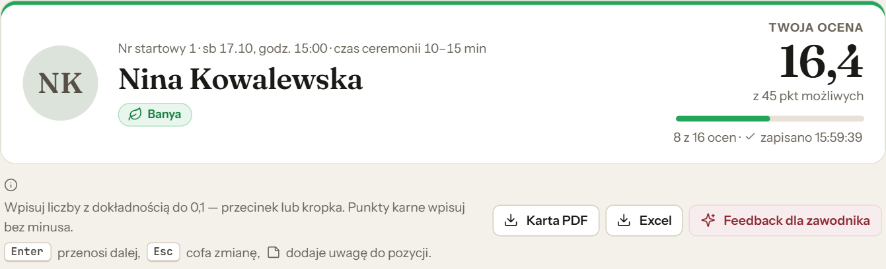
- Karta PDF — Twoja karta z logo Sommer Residence i miejscem na podpis, do wydruku. Jest też kopią bezpieczeństwa na wypadek awarii.
- Excel — ta sama karta w arkuszu kalkulacyjnym.
- Pliki zapisują się w folderze „Pobrane” na laptopie.
8Feedback dla zawodnika
Feedback to opisowa ocena seansu z Twojego punktu widzenia. System przygotowuje szkic na podstawie Twoich ocen i uwag — Ty go czytasz, poprawiasz i zatwierdzasz. Po turnieju supervisor przygotowuje dla każdego zawodnika jeden plik PDF z opiniami wszystkich sędziów, którzy zatwierdzili feedback, i wysyła go zawodnikowi.
- Na karcie zawodnika kliknij „Feedback dla zawodnika” (przycisk działa, gdy karta ma już oceny).
- Kliknij „Przygotuj szkic feedbacku”. Jeśli karta nie jest kompletna, system Cię o tym uprzedzi.
- Przeczytaj szkic i popraw, co chcesz — możesz zmieniać tytuły i treść każdej sekcji. Linie zaczynające się od „• ” w pliku PDF staną się listą punktowaną.
- Gdy treść jest gotowa, kliknij „Zatwierdź feedback”. Tylko zatwierdzony feedback trafi do pliku dla zawodnika.
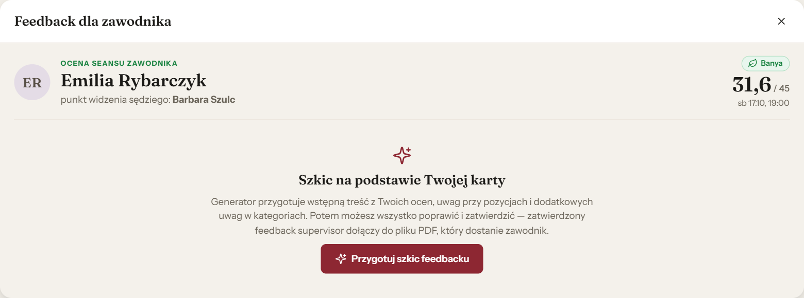
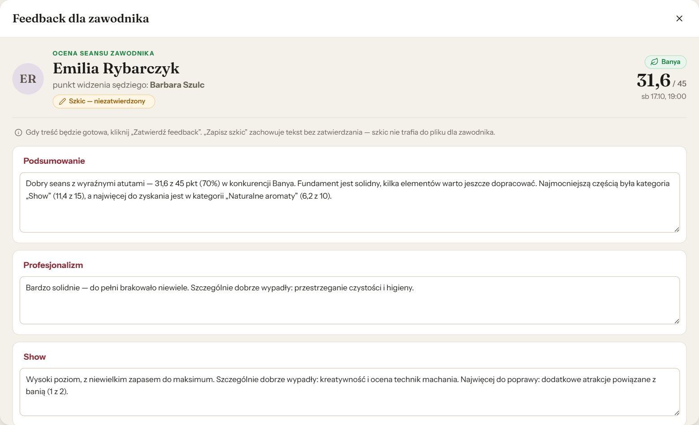
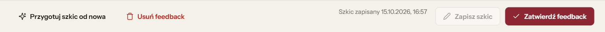
| Przycisk | Co robi |
|---|---|
| Zatwierdź feedback | Zapisuje ostateczną wersję. Zatwierdzony feedback supervisor dołączy do pliku PDF dla zawodnika. |
| Zapisz szkic | Zachowuje tekst, żeby wrócić do niego później — szkic nie trafia do pliku dla zawodnika. |
| Usuń feedback | Usuwa zapisany feedback (szkic albo zatwierdzony). Tej operacji nie można cofnąć. |
| Przygotuj szkic od nowa | Tworzy nowy szkic z aktualnych ocen i uwag — zastępuje tekst w oknie. |
Stan feedbacku widać na przycisku na karcie zawodnika:
- „Feedback dla zawodnika” — jeszcze nie przygotowany;
- „Feedback — szkic” (żółty) — zapisany, ale niezatwierdzony;
- „Feedback zatwierdzony” (zielony) — gotowy, trafi do pliku dla zawodnika.
Nie pobierasz PDF z feedbackiem — plik dla zawodnika przygotowuje supervisor. Każda opinia jest w nim na osobnej stronie, z imieniem i nazwiskiem sędziego oraz jego oceną w kategoriach.
Zatwierdzony feedback możesz jeszcze poprawić: zmień tekst i kliknij „Zatwierdź feedback” ponownie. Feedback możesz przygotować także po zakończeniu turnieju, gdy karta jest już tylko do odczytu.
9Porównanie zawodników
Zakładka „Porównanie” pokazuje Twoje oceny kilku zawodników obok siebie, pozycja po pozycji — przydaje się, gdy chcesz być konsekwentny w ocenach.
- Kliknij „Porównanie” w górnym pasku.
- Zaznacz od 2 do 6 zawodników (na start system zaznacza trzech ostatnich w kolejności startu, którym wpisałeś już oceny). „Wyczyść wybór” odznacza wszystkich, a × nad kolumną usuwa jednego zawodnika.
- Zielone tło i pogrubienie oznaczają najwyższą notę w wierszu. Przy dwóch zawodnikach pojawia się kolumna z różnicą.
- Ikona przy wartości pokazuje Twoją uwagę — wystarczy najechać kursorem.
- Poprawka w tabeli: kliknij ocenę pozycji (po najechaniu pojawia się ołówek ), wpisz nową wartość i naciśnij Enter; Esc anuluje. Zmiana od razu trafia do karty zawodnika, sum i historii zmian. Błędna wartość nie zostanie zapisana — pod polem pojawi się komunikat.
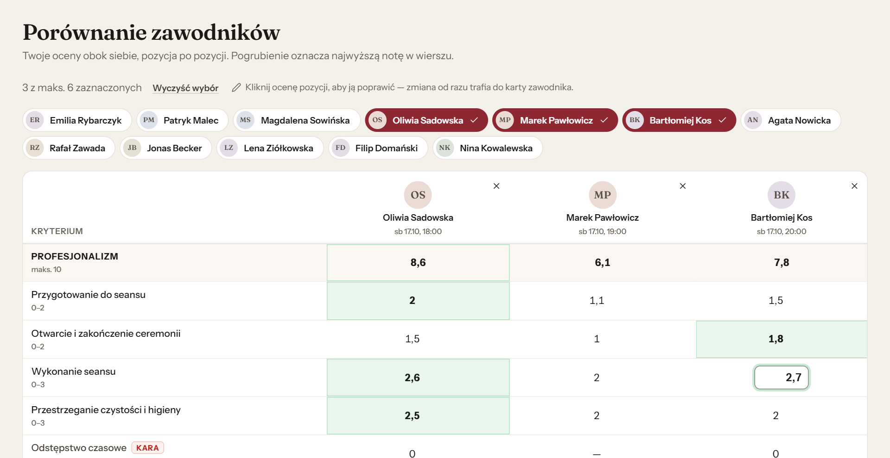
10Mój ranking
Zakładka „Mój ranking” układa zawodników według Twoich ocen. Paski pokazują wynik w każdej kategorii, a dopisek „karta niekompletna” przypomina o brakujących ocenach. Kliknięcie zawodnika otwiera jego kartę.
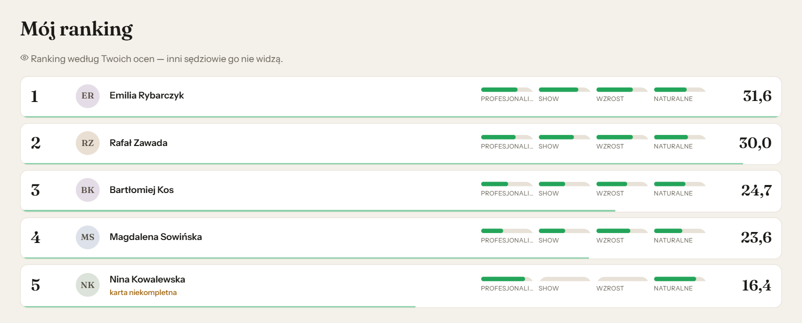
Twojego rankingu nie widzą inni sędziowie. To nie jest oficjalny wynik — oficjalne wyniki liczy supervisor z kart wszystkich sędziów.
11Finał — trzy dni, trzy karty
- W finale każdego zawodnika oceniasz na trzech osobnych kartach: piątek — Relax, sobota — HOT, niedziela — Banya.
- Nad listą zawodników jest przełącznik „Konkurencja” z datą każdego dnia — wybierz właściwy dzień przed wpisywaniem ocen.
- Każda konkurencja ma własną kartę oceny (inne kategorie i pozycje).
- W „Porównaniu” i „Moim rankingu” jest dodatkowo widok „Suma 3 dni”.
12Zapis ocen i brak internetu
Znacznik w górnym pasku zawsze pokazuje stan zapisu:
| Znacznik | Co oznacza |
|---|---|
| Zapisano | Wszystkie Twoje oceny są w bazie. Wszystko w porządku. |
| Zapisywanie… | Oceny właśnie się wysyłają — zwykle trwa to ułamek sekundy. |
| Brak połączenia · 3 czeka | Nie ma internetu. Oceny są bezpieczne w przeglądarce i wyślą się same, gdy połączenie wróci. Możesz dalej oceniać. |
Gdy nie ma internetu:
- oceniaj dalej, jak zwykle;
- nie zamykaj karty przeglądarki i nie wylogowuj się, dopóki znacznik nie wróci do „Zapisano”;
- nie czyść historii ani danych przeglądarki;
- jeśli brak połączenia trwa dłużej, powiedz supervisorowi i dla pewności pobierz kartę PDF.
Jeśli odświeżysz stronę bez internetu, u góry pojawi się żółty pasek „Brak połączenia z bazą — pracujesz na kopii zapisanej w tej przeglądarce”. Możesz oceniać dalej; po powrocie internetu oceny wyślą się same.
13Koniec pracy i wylogowanie
- Po zakończeniu oceniania kliknij „Wyloguj” w prawym górnym rogu.
- Na wspólnym laptopie zawsze się wyloguj, zanim oddasz komputer kolejnej osobie.
- Przed wylogowaniem upewnij się, że u góry widać Zapisano.
14Pytania i problemy
System sam mnie wylogował.
Supervisor mógł zmienić Twój kod albo przywrócić dane z kopii zapasowej. Zaloguj się ponownie kodem od supervisora — najlepiej na tym samym laptopie i w tej samej przeglądarce. Oceny, które czekały na wysłanie, dotrą po zalogowaniu.
Nie widzę zawodnika na liście.
Lista pokazuje zawodników tej konkurencji, w kolejności startu. Jeśli kogoś brakuje albo godzina się nie zgadza — zgłoś to supervisorowi, który prowadzi listę zawodników.
Nie mogę wpisać oceny — pola są szare.
Turniej został zakończony i karty są tylko do odczytu. Jeśli musisz coś poprawić, poproś supervisora.
Liczba nie chce się zapisać.
Przeczytaj czerwony komunikat pod polem. Najczęściej to minus w polu kary, liczba większa niż zakres albo dwie cyfry po przecinku (rozdział 4).
Strona się nie ładuje albo jest biała.
Sprawdź internet i naciśnij Ctrl + F5 (twarde odświeżenie). Jeśli to nie pomaga — zgłoś supervisorowi. Twoje oceny są zapisane w bazie.
Jak wysłać zawodnikowi PDF z moim feedbackiem?
Nie musisz — wystarczy, że zatwierdzisz feedback. Supervisor przygotowuje dla każdego zawodnika jeden plik z opiniami wszystkich sędziów i wysyła go po turnieju. Szkic (niezatwierdzony) do pliku nie trafi.
Czy inni sędziowie widzą moje oceny?
Nie. Widzisz wyłącznie własne karty. Supervisor widzi karty wszystkich sędziów na bieżąco.
Czy mogę oceniać na telefonie lub tablecie?
System działa na tablecie i telefonie, ale do oceniania zalecamy laptop — karta jest długa, a z klawiaturą wpisywanie jest najszybsze. Na ekranie dotykowym wygodny jest suwak pod każdą pozycją; dokładną wartość zawsze możesz wpisać w pole.